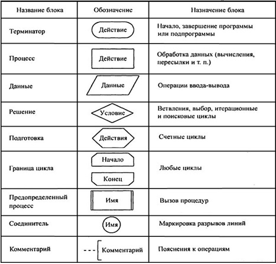
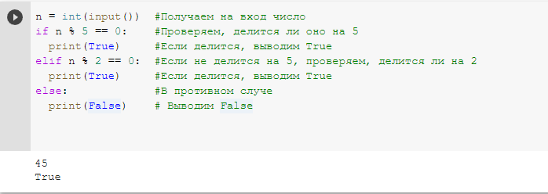
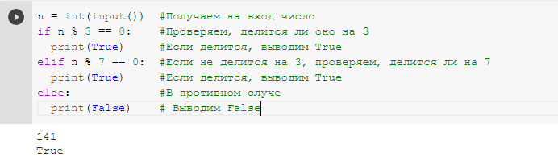
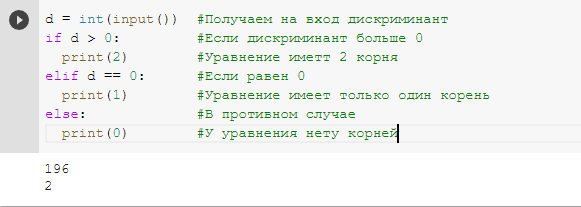

Понятие алгоритма
Понятие алгоритмаПонятие алгоритма
Происхожение слова "алгоритм" связывают с именем учёного Мухаммеда ал-Хорезми.
Алгоритм - это точное описание порядка действий, которые должен выполять исполнитель для решения задачи за конечное время.
Здесь исполнитель - это устройство или одушевлённое существо (человек), способное понять и выполнить команды, составляющие алгоритм.
В информатике рассматривают только формальных исполнителей, которые не понимают (и не могут понять) смысл команд. К этому типу относятся все технические устройства, в том числе и компьютер.
У каждого формального исполнителя есть собственная система команд. В алгоиртмах исполнитель может использовать только те команды, которые содержатся в его системе команд.
Алгоритм обладает следующими свойствами:
- Дискретность - алгоритм состоит из отдельных команд (шагов), каждая из которых выполняется за конечно время.
- Детерменированность (определённость) - при каждом запуске алгоритма с одними и теми же исходными данные должен быть получен один и тот же результат.
- Понятность - алгоритм содержит только команды, входящие в систему команд исполнителя, для которого он предназначен.
- Конечность (результативность) - для корректного набора данных алгоритм должен завершаться через конечно время с вполне определённым результатом (результатом может быть и сообщение о том, что задача не имеет решений).
- Корректность - для допустимых исходных данных алгоритм должен приводить к правильному результату.
Сущесвуют следующие способы записи алгоритмов:
- на естественном языке
- на псевдокоде
- в виде блок-схемы
- в виде программы
На естественном языке обычно делаются наброски алгоритма, который потом будет формализован.
Псевдокод представляет собой более формальный способ описание алгоритма, который содержит в себе как естественный язык, так и операторы какого-либо языка программирования
Блок-схемы представляют собой графический способ задания алгоритмов. При составление блок-схемы используются следующие элементы:
Запись алгоритма в виде программы - наиболее важный и часто применяемый способ записи алгоритма, ведь только с программой могут работать формальный исполнители. Для записи алгоритмов существуют разные языки программирования, в нашем случае, таким языком будет Python.
Задачи для объяснения
В качестве первой задачи для объяснения предлагается следующее задание:
"Определите, что из нижеперечисленного списка является алгоритмом, а что нет. Объясните почему?"
- каталог книг в библиотеке
- инструкция по сборке дивана
- телепрограмма
- рецепт приготовления супа
- календарь на текущий год
- программа, которая принимает на вход целые числа и проверяет, является ли данное число степенью двойки
Решение следующее:
- Каталог книг в библиотеке не является алгоритмом, так как не содержит в себе никаких действий.
- Инструкция по сборке дивана является алгоритмом, так как содержит в себе точное описание порядка действий по сборке дивана.
- Телепрограмма не является алгоритмом, так как не содержит в себе никаких действий.
- Рецент приготовления супа - это алгоритм, так как в нём содержится перечень действий, для приготовления супа.
- Календарь не является алгоритмом, так как не содержит в себе никаких действий.
- Указанная программа - это алгоритм, так как содержит инструкции, которые описывают, какие действие необходимо произвести, для получения желаемого результата.
Второя задача для объяснения материала состоит в том, чтобы разработать алгоритм на языке программирования Python, который проверяет, делится ли полученное на вход целое число на 5 или на 2. В том случае, если число делится на 5 или на 2, вывести на экран True, в противном случае - False.
Для решения этой задачи, сначала необходимо определить, как проверить, делится ли число на 5 или на 2. Например, можно пробовать делить число на 5 и сравнивать полученный от деления остаток с 0. Если остаток равен 0, то число делится на 5, если нет, то не делится. Если мы выяснили, что число делится на 5, можно выводить на экран True, в противном случае, нужно аналогично проверить, делится ли число на 2.
Когда мы сформулировали алгоритм на естественном языке, можно переходить к написанию программы:
Задачи для самостоятельного решения
Первая задача для самостоятельного решения состоит в том, чтобы разработать алгоритм на языке программирования Python, который проверяет, делится ли полученное на вход целое число на 3 или на 7. В том случае, если число делится на 3 или на 7, вывести на экран True, в противном случае - False.
Решения данной задачи аналогично решению предыдущей задачи. Сначала необходимо определить, как проверить, делится ли число на 3 или на 7, а потом реализовать описанный алгоритм на языке програмирования Python. На рисунке ниже приведён пример решения данной задачи:
Вторая задача для самостоятельного решения выглядит следующим образом:
На вход программе поступает целое число - дискриминант квадратного уравнения. Необходимо определить, сколько корней имеет данное квадратное уравнение в действительных числах. Реализовать описанную программу на языке программирования Python.
Решение: сначала нужно понять, как определить кол-во корней квадратного уравнения зная дискриминант. Из курса математики известно, что если дискриминант положительный, то уравнения имеет 2 вещественных корня, если дискриминант равен 0, то уравнения имеет единственный вещественный корень, в противном случае уравнение вещественных корней не имеет. Для реализации вышеописанных проверок достаточно просто сравнивать полученный дискриминант с 0.
После того как мы сформулировали алгоритм на естественном языке, можно переходить к написанию соотвутсвющей программы:
